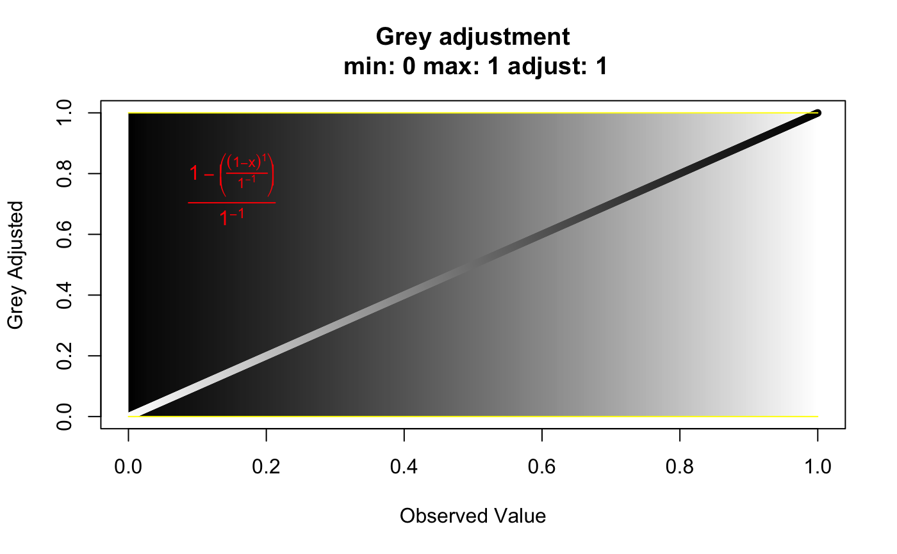

This function has one purpose. It is for deciding the appropriate scaling for a grey palette to be used for edge weights of a minimum spanning network.
greycurve(data = seq(0, 1, length = 1000), glim = c(0, 0.8), gadj = 3, gweight = 1, scalebar = FALSE)
| data | a sequence of numbers to be converted to greyscale. |
|---|---|
| glim | "grey limit". Two numbers between zero and one. They determine
the upper and lower limits for the |
| gadj | "grey adjust". a positive |
| gweight | "grey weight". an |
| scalebar | When this is set to |
A plot displaying a grey gradient from 0.001 to 1 with minimum and maximum values displayed as yellow lines, and an equation for the correction displayed in red.
# Normal grey curve with an adjustment of 3, an upper limit of 0.8, and # weighted towards smaller values. greycurve()not_run({ # 1:1 relationship grey curve. greycurve(gadj=1, glim=1:0) # Grey curve weighted towards larger values. greycurve(gweight=2) # Same as the first, but the limit is 1. greycurve(glim=1:0) # Setting the lower limit to 0.1 and weighting towards larger values. greycurve(glim=c(0.1,0.8), gweight=2) })